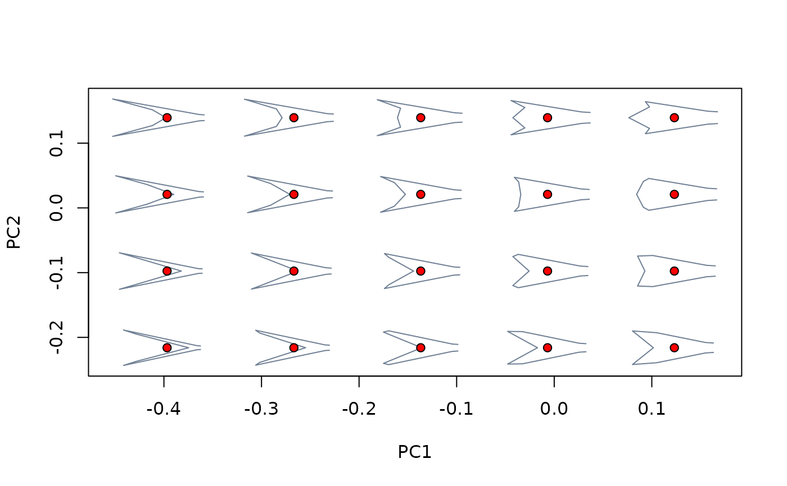

R/shapes_operations.R
extract_shapes.RdExtracts shapes from "mspace" objects in various ways
(background shape models, specific axes, or particular coordinates - either
provided or chosen interactively by the user).
extract_shapes(
mspace,
axis = NULL,
nshapes = NULL,
scores = NULL,
range = NULL,
keep.template = TRUE,
mag = 1
)An "mspace" object.
Optional integer indicating an axis along which shapes should be sampled.
Optional integer indicating the number of shapes the user wishes to extract.
An optional vector of length 2 or 2-column matrix indicating
the (x,y) coordinates in the morphospace that the user wishes to extract
as shapes. If NULL, a new device will open and the user will be
asked choose the coordinates interactively. Ignored when axis is
provided.
Optional integer vector of length 2, indicating the range of values the axis should be sampled over.
Logical; should warped templates be returned as well?
Optional numeric indicating a magnifying factor for representing shape transformation.
A list containing sampled shapes ($shapes), as well as their
associated templates ($templates), when warranted.
This function provides the user with an easy way to extract
theoretical shapes from an existing morphospace. If only an "mspace"
object is provided, the set of background shape models (optionally
amplified by a factor of mag) will be returned.
If axis is provided, a sample of nshapes shapes computed at
regular intervals along the specified ordination axis (either over its
empirical range -optionally amplified by a factor of mag- or, if
provided, between the extremes of range) will be returned.
If axis = NULL, this function will let the user to select arbitrary
coordinates in the morphospace to be back-transformed into shapes. There
are two alternatives: 1) if scores = NULL (the default option) the
user will be asked to interactively select the location(s) of
nshapes points in a new graphical device. 2) Otherwise, the set of
shapes represented by the (x,y) coordinates provided in scores will
be returned.
#load all the relevant data and packages
library(Morpho)
library(geomorph)
data("tails")
shapes <- tails$shapes
sizes <- tails$sizes
species <- tails$data$species
type <- tails$data$type
links <- tails$links
sp_shapes <- expected_shapes(shapes, species)
tree <- tails$tree
#build phylomorphospace
phylomsp <- mspace(shapes, links = links) %>%
proj_phylogeny(sp_shapes, tree = tree)
##Extracting background shape models
#extract background shape models
background_shapes <- extract_shapes(phylomsp)
#> Warning: there are no templates to warp; won't be returned
#pile shapes and visualise the corresponding coordinates sampled in the
#morphospace
pile_shapes(background_shapes$shapes, links = links)
plot_mspace(phylomsp, phylo = FALSE)
background_scores <- proj_eigen(two.d.array(background_shapes$shapes),
phylomsp$ord$rotation, phylomsp$ord$center)
points(background_scores, pch = 21, bg = "red")

##Sampling a particular ordination axis
#extract shapes along PC2
PC2_shapes <- extract_shapes(phylomsp, axis = 2, nshapes = 8)
#> Warning: there are no templates to warp; won't be returned
#pile shapes and visualise the corresponding coordinates sampled in the
#morphospace
pile_shapes(PC2_shapes$shapes, links = links, mshape = FALSE)
plot_mspace(phylomsp, phylo = FALSE)
PC2_scores <- proj_eigen(two.d.array(PC2_shapes$shapes),
phylomsp$ord$rotation, phylomsp$ord$center)
points(PC2_scores, pch = 21, bg = "blue")
##Sampling particular (x,y) locations
#1. Interactively
if (FALSE) {
#select 1 shape in the new window
arbitrary_shape <- extract_shapes(phylomsp, nshapes = 1)
#plot shape and visualise the corresponding coordinates sampled in the
#morphospace
plot(arbitrary_shape$shapes[,,1], axes = FALSE, xlab = "", ylab = "")
lineplot(arbitrary_shape$shapes[,,1], links)
plot_mspace(phylomsp, phylo = FALSE)
arbitrary_scores <- proj_eigen(two.d.array(arbitrary_shape$shapes),
phylomsp$ord$rotation, phylomsp$ord$center)
points(arbitrary_scores, pch = 21, bg = "magenta")
}
#2. Specifying coordinates
#get scores of the nodes of the phylogeny for the first two PCs
nodes_scores0 <- phylomsp$projected$phylo_scores[14:25,1:2]
#extract shapes from morphospace
nodes_shapes <- extract_shapes(phylomsp, scores = nodes_scores0)
#> Warning: there are no templates to warp; won't be returned
plot_mspace(phylomsp, phylo = TRUE)
nodes_scores <- proj_eigen(two.d.array(nodes_shapes$shapes),
phylomsp$ord$rotation, phylomsp$ord$center)
points(nodes_scores, pch = 21, bg = "green")